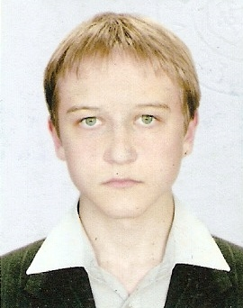

Go Home
Andrew Salei

| +380968801543
|
saleyka.neocities.org
|
| saleiandrew@gmail.com
|
Dnipro
|
WORK EXPERIENCE
Assistant and Associate researcher|September 2017 – present
As an Assistant:
- lecturing “Chemical technology of special types of high-melting non-metal materials products”
- laboratory sessions “Mechanical equipment in chemical technology”
As an Associate Researcher:
- Scientific research is devoted to the development of design methods of compositions of oxidic glass
with the set complex of properties and the development of glass on the basis of these methods for receiving
glass enamel and glasscrystalline electroinsulating covers for film heating components and inductors made
of aluminum, copper and steel correspondingly
- Investigation of basic regularities of formation of coatings on steel, aluminum and cooper
- Writing articles and patents
EDUCATION AND TRAINING
Doctor of Philosophy (PhD) at Chemical technology of high-melting non-metal materials|April 2016
- Title of dissertation “Glass enamel and glasscrystalline electroinsulating covers for non-ferrous metal products”
Postgraduate student|November 2012 – October 2015
- Department of Chemical technology of Ceramics and Glass, Ukrainian State University of Chemical Technology
Student (Master’s degree)|September 2007 – May 2012
- Department of Chemical technology of Ceramics and Glass, Ukrainian State University of Chemical Technology
PERSONAL SKILLS
Mother languages:
Other language(s):
Communication skills:
- Good communication skills
Job-related skills:
- Hardworking and inquisitive
- Confident user of various MS Windows, MS Office, MathCad 14, Statgraphics Centurion XV
- Creating and editing graphic and video materials
ADDITIONAL INFORMATION
Publications:
- 6 publications in the field of Materials Science and Engineering
Citations in:
- 3 total citations of publications
Google-Scholar account:
Scopus account: